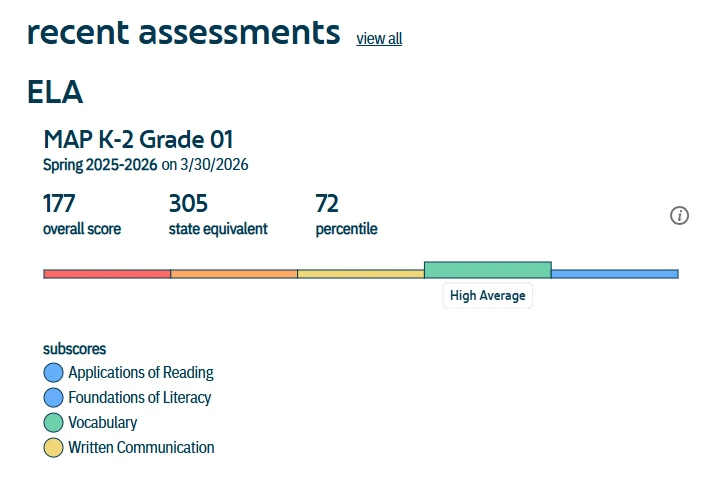
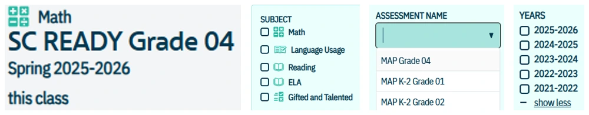
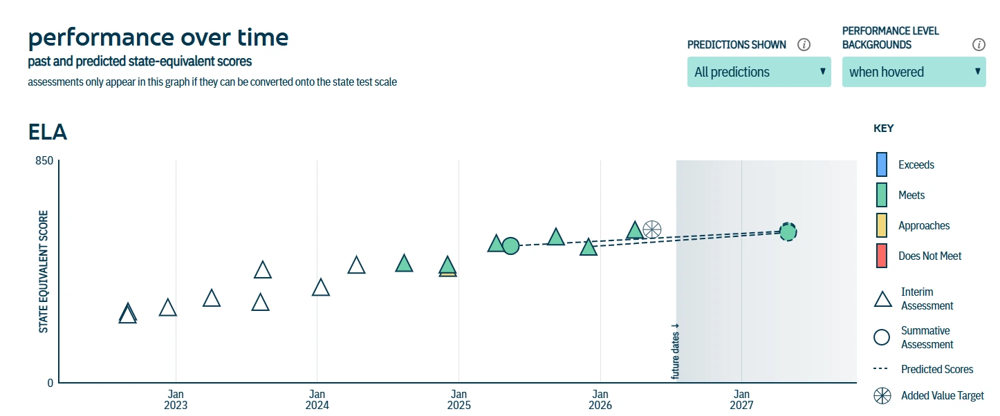

Growing Pathways
for Students
A district testing/accountability coordinator loaded to Ed-Fi
Administrator Navigator
District & school leaders · 20+ dashboards · attendance, behavior, predictions
Teacher Navigator
Classroom & coaches · student, class and group-level detail
A holistic view of student success
Administrator Navigator gives district and school administrators a holistic view of the metrics that drive student success, in one platform — over 20 dashboards, curated and designed to fit within an existing workflow.
District, school, and student-level insights
Five highlighted dashboards, each drilling from a district-wide roll-up down to a single student.
Questions to explore
- Which students are behind this district or school metric?
- How does this metric differ across student groups?
- How has the same metric changed across the schools I select?
Where district and school performance sit side by side, from one metric to a five-school comparison.
- Metrics Dashboard
District, school, and student-level summary view of every metric, with the option to see the list of students behind any one number.
- Student group breakdown
Disaggregate a metric by the subgroups ESSA requires: birth sex, ELL status, foster status, gifted and talented, economically disadvantaged, race, and special education.
- Metric Comparison
Select up to five schools or LEAs and track one metric's trend over time, its change from the previous year, and how each selected school ranks by percentile against the others.
Some Metrics Dashboard categories lean toward behavior, but far more of them are academic: percent proficient, percent of students scoring above 20 on the ACT, and similar measures that speak directly to Lancaster's academic focus.
Metric Comparison pulls from five schools at once, so it can take a moment to load. Give it a few seconds before assuming a filter did not apply.
Questions to explore
- What do one student’s assessment history and course grades show together?
- How do attendance and prior ELA scores vary within a course section?
A closer look at one student or one class section, without leaving Administrator Navigator.
- Student Profile
Assessment history, course history, chronic absenteeism, attendance, and a contact person, all for one student at a time.
- Section Profile
Attendance, discipline rate, and average prior ELA score for every student enrolled in a single course section, sometimes called the "Teacher Navigator inside Administrator Navigator."
- Course grade and assessment score, together
Student Profile is the one dashboard where a student's test scores and course grades for the school year sit side by side, no export required.
Questions to explore
- How does performance on the same assessment differ by school or test season?
- What do individual students’ scale scores and performance levels show over time?
- How do course grades compare with results on the corresponding end of course exam?
All assessment data in one place, with the metrics you need to compare across test seasons, schools, and scale scores.
- Assessments
District, school, and student-level results, plus a table at the bottom listing every student who took a given assessment.
- Assessments: Student Detail
Student-level data with performance levels and scale scores over time, plus counts by performance level for students across the district.
- EOC and SC Ready
High school courses use the End-of-Course exam (EOCEP); elementary and middle school use SC Ready.
If a class shows a strong pass rate but a weaker EOC pass rate, here is how to check it yourself.
- In Assessments, filter to the EOC or SC Ready exam and grade level you want, then open the student list at the bottom.
- Export that list to Excel.
- In Course Grades: Student Detail, filter to the same course and the S1/S2 grading periods, then export that list too.
- Match the two exports by Student ID with XLOOKUP to line up each student's exam performance next to their final course grade.
You can also see a single student's exam score and course grade together on Student Profile, without exporting anything.
Questions to explore
- How many students fall within the numeric grade range I select?
- Which students have those grades in a specific course?
Snapshot shows how many students meet a grade range you set. Student Detail shows every student's grade in a specific course.
- Course Grades: Snapshot
The percentage and count of students who fit the selection criteria you enter, whether that is a numeric grade range, a school, or a grade level.
- Course Grades: Student Detail
Course-level grade results for each student, filterable by course, grade level, and school type. Use the search box to find a specific course by name.
- Letter grade vs. numeric grade
LetterGradeEarned is text; NumericGradeEarned is a decimal. Together they support both one-time standards, like counting to 10, and standards graded multiple times across the year.
Select Numeric Grade Range does not respond to typed values. Drag the scroller instead. To see the whole district, leave Select Grade Level blank; to focus on one band, such as elementary or high school, choose specific grade levels there.
If you have filtered a table, right-click it and choose Download from that menu. A plain download button will pull the unfiltered table instead.
Questions to explore
- Which students are predicted to meet their target?
- How do Added Value and Median Annual Targets differ?
- Which students should I review in Performance over Time?
A brief look today, focused on 2025-26 ELA proficiency, to get you ready for interim results this fall.
Ambitious growth. Pushes students toward proficiency; lower percent-met than MAT.
Typical growth, the gain a typical similar student makes; higher percent-met than AVT.
Filter the student table to Predicted to Meet Target = "no," export via the three-dot menu for one row per student, and pair it with Teacher Navigator's Performance over Time view for the same predictions at classroom scale.
Good to know
Six panels move from a district roll-up to school progress, breakdowns, subgroup detail, and a student prediction roster.
AVT is generated from previous test scores and groups students into CGP groups based on performance.
CGP, or Conditional Growth Percentile, shows how a student's growth compares to similar peers. 50 is typical, higher is more growth.
Percent Met stays empty until current-year summatives arrive; predicted columns populate in the meantime.
Filtering the Accountability Metrics Dashboard
The (Pre-Release) Metrics Dashboard, under Accountability, runs on one filter panel. Step through it below, or click the screen to view it at full resolution.
Classroom and student insights
The classroom-facing view of attendance, assessments, behavior, and future targets — the same GPS data, designed for teachers and coaches.
Search by grade and school to see all student data for that entire grade level.
Search by teacher, course, and grade level to see student performance for a specific course.
Search by student name for unique student-level data — assessments, attendance, and more.
Create and edit groups, add students and staff, and run MTSS interventions with a focused group.
Questions to explore
- What do this student’s recent assessments and attendance show?
- How does the student’s performance over time compare with the displayed targets?
The deepest level: one child's full picture, including courses, assessments, and prediction targets.
- At a glance
Headline metrics for your student.
- Recent assessments
Split by subject.
- Performance over time
Predicted AVT based on historical assessments.
- Chronic attendance
Student chronic-attendance status and count of active school-year days.

Questions to explore
- How is assessment performance distributed across my class or group?
- Which skill areas need a closer look in the expanded results?
Filter to a class or group, then see the distribution of performance on any exam.
- Select your class or student group.
- Filter by assessment and topic — interim or summative.
- Read the distribution of performance across the group.
- Expand a result to see strand-level (subscore) detail.

A colored bar runs low to high performance; the filled segment marks where the group falls today.
Questions to explore
- Which students belong in a group for additional support?
- What interventions are recorded on the Updates tab?
- What does the group’s assessment or attendance information show at the next review?
Build cohorts beyond the classroom roster, and track the MTSS work that follows.
- At a glance
Summary of the group.
- Updates
Notes and interventions.
- Assessments
Performance for everyone in the group.
- Attendance
Progress tracking — days present, days missing.
- Identify a cohort needing support — screening, survey, or attendance flags.
- An admin creates the group and adds students and staff.
- Log interventions on the Updates tab, with start and end dates.
- Check the Assessments tab partway through to see if it's working.
Adding staff to a group gives them student-level access to that group only. Admin rights give access to every student in scope — use the admin-creates / interventionist-views pattern by default. Creators (admins) can edit membership; viewers (teachers, interventionists) can view and add notes only.
Questions to explore
- How do interim and summative results change over time?
- How do the displayed results relate to the AVT and MAT targets?
Each triangle is an interim assessment, each circle the summative. The trend line is the predicted score, the flyweel plots the AVT.

These are two different growth models feeding one report-card indicator — the same AVT/MAT targets used in the district-level Predictions & Targets dashboard, here at the student level.
Built for South Carolina educators, administrators, coaches, and staff.
District-wide chronic-absenteeism triage
South Carolina's most recent statewide report cards showed roughly one in five students chronically absent — a trend the state's Education Oversight Committee has flagged as a top concern. Across 23 schools, LCSD leadership could use the Chronic Absenteeism dashboard to rank schools by rate, then drop into the student view to find which grade bands are driving each school's number, before it locks into the report card.
Early watch-lists for on-track & CCR
With 23 schools feeding into district-level graduation and CCR numbers, a counselor at any LCSD high school could open On-Track & CCR, sort the Rates by Cohort table by % On-Track, and flag cohorts below target. Layer in Predictions & Targets to build a watch-list of students not predicted to meet target this year, then confirm each flagged student's cohort records are accurate before the conversation with families starts.